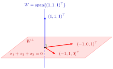

W⊥ collects all directions perpendicular to W. In R3 the complement of a plane through the origin is its normal line, and the complement of a line through the origin is the plane perpendicular to it.

The figure draws the first example below: W=span{(1,1,1)⊤} is a line, and W⊥ is the plane x1+x2+x3=0 with basis(−1,1,0)⊤,(−1,0,1)⊤. Every vector of the plane is orthogonal to (1,1,1)⊤, the two meet only in 0, and the dimensions add up to 1+2=3.
"Complement" does not mean set complement: V∖W is never a subspace, as it misses 0. Nor is W⊥ just some subspace U with V=W⊕U: such complements are many, but the orthogonal one is unique. It depends on the inner product; with a different inner product on Rn the orthogonal complement can change.
To compute it, it suffices to test a spanning set: if W=span{w1,…,wk}, then v∈W⊥ if and only if v⋅wi=0 for i=1,…,k. In Rn this is the homogeneous systemM⊤v=0 with M=(w1⋯wk), so W⊥ is the null space (kernel) of M⊤.
Aliases: perp, orthocomplement, perpendicular complement
Keywords: W^⊥, W perp, (W^⊥)^⊥ = W, dim W + dim W^⊥ = n, R^n = W ⊕ W^⊥, normal line
Symbols: element of, intersection, real numbers, subset
Last updated: 22 October 2026 19:04
Orthogonal ComplementFundamental Theorem of Linear AlgebraOrthogonal ProjectionInner ProductOrthogonal VectorsSubspaceDirect SumGram-Schmidt AlgorithmNormal VectorHyperplaneOrthonormal Basis